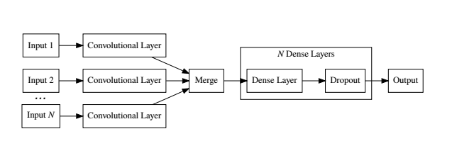

- 000 开篇词 你的360度人工智能信息助理.md
- 001 聊聊2017年KDD大会的时间检验奖.md
- 002 精读2017年KDD最佳研究论文.md
- 003 精读2017年KDD最佳应用数据科学论文.md
- 004 精读2017年EMNLP最佳长论文之一.md
- 005 精读2017年EMNLP最佳长论文之二.md
- 006 精读2017年EMNLP最佳短论文.md
- 007 精读2017年ICCV最佳研究论文.md
- 008 精读2017年ICCV最佳学生论文.md
- 009 如何将深度强化学习应用到视觉问答系统？.md
- 010 精读2017年NIPS最佳研究论文之一：如何解决非凸优化问题？.md
- 011 精读2017年NIPS最佳研究论文之二：KSD测试如何检验两个分布的异同？.md
- 012 精读2017年NIPS最佳研究论文之三：如何解决非完美信息博弈问题？.md
- 013 WSDM 2018论文精读：看谷歌团队如何做位置偏差估计.md
- 014 WSDM 2018论文精读：看京东团队如何挖掘商品的替代信息和互补信息.md
- 015 WSDM 2018论文精读：深度学习模型中如何使用上下文信息？.md
- 016 The Web 2018论文精读：如何对商品的图片美感进行建模？.md
- 017 The Web 2018论文精读：如何改进经典的推荐算法BPR？.md
- 018 The Web 2018论文精读：如何从文本中提取高元关系？.md
- 019 SIGIR 2018论文精读：偏差和流行度之间的关系.md
- 020 SIGIR 2018论文精读：如何利用对抗学习来增强排序模型的普适性？.md
- 021 SIGIR 2018论文精读：如何对搜索页面上的点击行为进行序列建模？.md
- 022 CVPR 2018论文精读：如何研究计算机视觉任务之间的关系？.md
- 023 CVPR 2018论文精读：如何从整体上对人体进行三维建模？.md
- 024 CVPR 2018论文精读：如何解决排序学习计算复杂度高这个问题？.md
- 025 ICML 2018论文精读：模型经得起对抗样本的攻击？这或许只是个错觉.md
- 026 ICML 2018论文精读：聊一聊机器学习算法的公平性问题.md
- 027 ICML 2018论文精读：优化目标函数的时候，有可能放大了不公平？.md
- 028 ACL 2018论文精读：问答系统场景下，如何提出好问题？.md
- 029 ACL 2018论文精读：什么是对话中的前提触发？如何检测？.md
- 030 ACL 2018论文精读：什么是端到端的语义哈希？.md
- 030 复盘 7 一起来读人工智能国际顶级会议论文.md
- 031 经典搜索核心算法：TF-IDF及其变种.md
- 032 经典搜索核心算法：BM25及其变种（内附全年目录）.md
- 033 经典搜索核心算法：语言模型及其变种.md
- 034 机器学习排序算法：单点法排序学习.md
- 035 机器学习排序算法：配对法排序学习.md
- 036 机器学习排序算法：列表法排序学习.md
- 037 查询关键字理解三部曲之分类.md
- 038 查询关键字理解三部曲之解析.md
- 039 查询关键字理解三部曲之扩展.md
- 040 搜索系统评测，有哪些基础指标？.md
- 041 搜索系统评测，有哪些高级指标？.md
- 042 如何评测搜索系统的在线表现？.md
- 043 文档理解第一步：文档分类.md
- 044 文档理解的关键步骤：文档聚类.md
- 045 文档理解的重要特例：多模文档建模.md
- 046 大型搜索框架宏观视角：发展、特点及趋势.md
- 047 多轮打分系统概述.md
- 048 搜索索引及其相关技术概述.md
- 049 PageRank算法的核心思想是什么？.md
- 050 经典图算法之HITS.md
- 052 机器学习排序算法经典模型：RankSVM.md
- 053 机器学习排序算法经典模型：GBDT.md
- 054 机器学习排序算法经典模型：LambdaMART.md
- 055 基于深度学习的搜索算法：深度结构化语义模型.md
- 056 基于深度学习的搜索算法：卷积结构下的隐含语义模型.md
- 057 基于深度学习的搜索算法：局部和分布表征下的搜索模型.md
- 057 复盘 1 搜索核心技术模块.md
- 058 简单推荐模型之一：基于流行度的推荐模型.md
- 059 简单推荐模型之二：基于相似信息的推荐模型.md
- 060 简单推荐模型之三：基于内容信息的推荐模型.md
- 061 基于隐变量的模型之一：矩阵分解.md
- 062 基于隐变量的模型之二：基于回归的矩阵分解.md
- 063 基于隐变量的模型之三：分解机.md
- 064 高级推荐模型之一：张量分解模型.md
- 065 高级推荐模型之二：协同矩阵分解.md
- 066 高级推荐模型之三：优化复杂目标函数.md
- 067 推荐的Exploit和Explore算法之一：EE算法综述.md
- 068 推荐的Exploit和Explore算法之二：UCB算法.md
- 069 推荐的Exploit和Explore算法之三：汤普森采样算法.md
- 070 推荐系统评测之一：传统线下评测.md
- 071 推荐系统评测之二：线上评测.md
- 072 推荐系统评测之三：无偏差估计.md
- 073 现代推荐架构剖析之一：基于线下离线计算的推荐架构.md
- 074 现代推荐架构剖析之二：基于多层搜索架构的推荐系统.md
- 075 现代推荐架构剖析之三：复杂现代推荐架构漫谈.md
- 076 基于深度学习的推荐模型之一：受限波兹曼机.md
- 077 基于深度学习的推荐模型之二：基于RNN的推荐系统.md
- 078 基于深度学习的推荐模型之三：利用深度学习来扩展推荐系统.md
- 078 复盘 2 推荐系统核心技术模块.md
- 079 广告系统概述.md
- 080 广告系统架构.md
- 081 广告回馈预估综述.md
- 082 Google的点击率系统模型.md
- 083 Facebook的广告点击率预估模型.md
- 084 雅虎的广告点击率预估模型.md
- 085 LinkedIn的广告点击率预估模型.md
- 086 Twitter的广告点击率预估模型.md
- 087 阿里巴巴的广告点击率预估模型.md
- 088 什么是基于第二价位的广告竞拍？.md
- 089 广告的竞价策略是怎样的？.md
- 090 如何优化广告的竞价策略？.md
- 091 如何控制广告预算？.md
- 092 如何设置广告竞价的底价？.md
- 093 聊一聊程序化直接购买和广告期货.md
- 094 归因模型：如何来衡量广告的有效性.md
- 095 广告投放如何选择受众？如何扩展受众群？.md
- 096 复盘 4 广告系统核心技术模块.md
- 096 如何利用机器学习技术来检测广告欺诈？.md
- 097 LDA模型的前世今生.md
- 098 LDA变种模型知多少.md
- 099 针对大规模数据，如何优化LDA算法？.md
- 100 基础文本分析模型之一：隐语义分析.md
- 101 基础文本分析模型之二：概率隐语义分析.md
- 102 基础文本分析模型之三：EM算法.md
- 103 为什么需要Word2Vec算法？.md
- 104 Word2Vec算法有哪些扩展模型？.md
- 105 Word2Vec算法有哪些应用？.md
- 106 序列建模的深度学习利器：RNN基础架构.md
- 107 基于门机制的RNN架构：LSTM与GRU.md
- 108 RNN在自然语言处理中有哪些应用场景？.md
- 109 对话系统之经典的对话模型.md
- 110 任务型对话系统有哪些技术要点？.md
- 111 聊天机器人有哪些核心技术要点？.md
- 112 什么是文档情感分类？.md
- 113 如何来提取情感实体和方面呢？.md
- 114 复盘 3 自然语言处理及文本处理核心技术模块.md
- 114 文本情感分析中如何做意见总结和搜索？.md
- 115 什么是计算机视觉？.md
- 116 掌握计算机视觉任务的基础模型和操作.md
- 117 计算机视觉中的特征提取难在哪里？.md
- 118 基于深度学习的计算机视觉技术（一）：深度神经网络入门.md
- 119 基于深度学习的计算机视觉技术（二）：基本的深度学习模型.md
- 120 基于深度学习的计算机视觉技术（三）：深度学习模型的优化.md
- 121 计算机视觉领域的深度学习模型（一）：AlexNet.md
- 122 计算机视觉领域的深度学习模型（二）：VGG & GoogleNet.md
- 123 计算机视觉领域的深度学习模型（三）：ResNet.md
- 124 计算机视觉高级话题（一）：图像物体识别和分割.md
- 125 计算机视觉高级话题（二）：视觉问答.md
- 126 计算机视觉高级话题（三）：产生式模型.md
- 126复盘 5 计算机视觉核心技术模块.md
- 127 数据科学家基础能力之概率统计.md
- 128 数据科学家基础能力之机器学习.md
- 129 数据科学家基础能力之系统.md
- 130 数据科学家高阶能力之分析产品.md
- 131 数据科学家高阶能力之评估产品.md
- 132 数据科学家高阶能力之如何系统提升产品性能.md
- 133 职场话题：当数据科学家遇见产品团队.md
- 134 职场话题：数据科学家应聘要具备哪些能力？.md
- 135 职场话题：聊聊数据科学家的职场规划.md
- 136 如何组建一个数据科学团队？.md
- 137 数据科学团队养成：电话面试指南.md
- 138 数据科学团队养成：Onsite面试面面观.md
- 139 成为香饽饽的数据科学家，如何衡量他们的工作呢？.md
- 140 人工智能领域知识体系更新周期只有5～6年，数据科学家如何培养？.md
- 141 数据科学家团队组织架构：水平还是垂直，这是个问题.md
- 142 数据科学家必备套路之一：搜索套路.md
- 143 数据科学家必备套路之二：推荐套路.md
- 144 数据科学家必备套路之三：广告套路.md
- 145 如何做好人工智能项目的管理？.md
- 146 数据科学团队必备的工程流程三部曲.md
- 147 数据科学团队怎么选择产品和项目？.md
- 148 曾经辉煌的雅虎研究院.md
- 149 微软研究院：工业界研究机构的楷模.md
- 150 复盘 6 数据科学家与数据科学团队是怎么养成的？.md
- 150 聊一聊谷歌特立独行的混合型研究.md
- 151 精读AlphaGo Zero论文.md
- 152 2017人工智能技术发展盘点.md
- 153 如何快速学习国际顶级学术会议的内容？.md
- 154 在人工智能领域，如何快速找到学习的切入点？.md
- 155 人工智能技术选择，该从哪里获得灵感？.md
- 156 内参特刊 和你聊聊每个人都关心的人工智能热点话题.md
- 156 近在咫尺，走进人工智能研究.md
- 结束语 雄关漫道真如铁，而今迈步从头越.md
005 精读2017年EMNLP最佳长论文之二
EMNLP每年都会选出两篇最佳长论文，我们已经分析过第一篇《男性也喜欢购物：使用语料库级别的约束条件减少性别偏见的放大程度》。今天我继续来讲第二篇。
EMNLP 2017年最佳长论文的第二篇是《在线论坛中抑郁与自残行为风险评估》（Depression and Self-Harm Risk Assessment in Online Forums）。这篇文章探讨了利用自然语言处理技术来解决一个社会问题。最近一段时间以来，如何利用机器学习、数据科学等技术来解决和处理社会问题，正逐渐成为很多社会科学和机器学习研究的交叉领域。
作者群信息介绍
第一作者安德鲁·耶特斯（Andrew Yates），计算机博士，毕业于美国华盛顿的乔治城大学（Georgetown Univeristy），目前在德国马克思普朗克信息学院（Max Planck Institute for Informatics）攻读博士后。他在博士阶段已经发表了多篇采用深度学习技术和信息检索、自然语言处理相关的论文。
第二作者阿曼·可汗（Arman Cohan），来自伊朗，是乔治城大学计算机系博士生。阿曼已在信息检索和自然语言处理相关方向发表了多篇论文。2016年，在华盛顿的Medstar Health实习并发表了两篇论文。2017年暑假，在美国加州圣何塞（San Jose）的奥多比（Adobe）研究院实习。
第三作者纳兹利·哥汗（Nazli Goharian）也来自乔治城大学计算机系，目前在系里担任计算机教授。第一作者是他之前的学生，第二作者是他当前的学生。纳兹利在长达20年的职业生涯中先后在工业界和学术圈任职，可以说有很深厚的学术和工业背景，他在信息检索和文本分析领域已发表20多篇论文。
论文的主要贡献
在理解这篇文章的主要贡献之前，我们还是先来弄明白，这篇文章主要解决了一个什么场景下的问题。
现代社会，人们生活工作的压力越来越大。研究表明，很多人都可能受到各式各样精神疾病（Mental Conditions）的困扰。在当下发达的互联网时代，在线场所为这些精神疾病患者寻求帮助提供了大量的资源和信息，特别是一些专业的在线支持社区，或是一些更大的在线社区比如Twitter或者Reddit。
因此，研究这些人在各种在线社区的行为，对设计更加符合他们需要的系统有很大帮助。对于很多社会研究人员来说，分析这些人的精神状态，才能更好地帮助他们长期发展。
这篇文章提出了一个比较通用的框架，来分析这些精神疾患者的在线行为。在这个框架下，可以比较准确地分析发布信息的人是否有自残（Self-Harm）行为，还可以比较容易地分析哪些用户有可能有抑郁症（Depression）的状况。
整个框架利用了近年来逐渐成熟的深度学习技术对文本进行分析。所以，这里的应用思路很值得借鉴和参考，也可以用于其他场景。
论文的核心方法
在介绍这篇文章提出的方法之前，作者们用不小的篇幅介绍了文章使用的数据集和如何产生数据的标签。
首先，作者们从著名的在线社区Reddit中找到和精神疾病有明确联系的帖子。这些帖子是按照一个事先准备的语料库来筛选的，这个语料库是为了比较高精度地发现与精神疾病相关的帖子。利用语料库里的句式，比如“我已经被诊断得了抑郁症”，这样就可以保证，找到的帖子在很大程度上是来自精神疾病患者的。
如果一个用户发布了这样的帖子，但在这之前发布的帖子少于100条，这个用户就不会包含在数据库中。做这样的筛选可能作者们的考虑是，太少的帖子无法比较全面地包含用户方方面面的行为。
作者们在Reddit社区中挖掘了从2006年到2016年十年时间里符合条件的所有帖子，并利用人工标注的方式筛选出了9210个有精神疾病困扰的用户。这些可以当做机器学习的正例。
那么如何寻找负例呢？作者们当然可以利用所有的用户，但是这样带来的后果很可能是研究没有可比性。如果正例的用户和负例的用户之间差别太大，我们就很难说这些差别是因为精神疾病造成的还是由其他区别带来的。于是，作者们想到的方法则是尽可能地对于每一个正例的用户都找到最接近的负例用户。
实际操作中，作者们采取了更加严格的方式，那就是负例的用户必须没有发布过任何与精神疾病相关的帖子，并且在其他方面都需要和正例用户类似。在这样的条件下，作者们找到了107274个负例用户。
对于数据集中的用户而言，每个用户平均发布969个帖子，平均长度都多于140个字。可以说，由这些用户构成的这个数据集也是本文的一个主要贡献，这个数据集用于分析抑郁症。
对于自残行为而言，作者们利用了一个叫ReachOut的在线社区的数据，收集了包括65024个论坛的帖子，其中有1227个帖子提到了自残。而对于提及自残的程度，数据分了五个等级用于表示不同的紧急情况。
这篇论文主要提出了基于卷积神经网络的文本分析框架，分别用于检测抑郁症用户和检测自残倾向度的两个任务中。虽然这两个任务使用的数据不同，最终采用的模型细节不同，但是两个任务使用的都是同一个框架。下面我就来说一说这个框架的主要思想。

首先，作者们利用每个用户的发帖信息来对每一个用户进行建模，基本的思路是通过神经网络来对用户的每一个帖子建模，从中提取出有效信息，然后把有效信息汇总成用户的一个表达。有了这个思路，我们再来看看具体是怎么做的。
每个帖子一个范围内的单词首先通过卷积层（Convolutional Layer）提取特征，然后提取的特征再经过最大抽取层（Max Pooling Layer）集中。这个步骤基本上就是把目前图像处理的标准卷积层应用到文本信息上。每一个帖子经过这样的变换就成了特征向量（Feature Vector）。有了这样的特征向量之后，用户的多个特征向量整合到一起，根据不同的任务形成用户的整体表征。
在检测抑郁症的任务上，作者们采用的是“平均”的方式，也就是把左右的帖子特征向量直接平均得到。而在检测自残的任务上，作者们则采用了一种比较复杂的形式，把所有的帖子都平铺到一起，然后再把当前帖子之前的帖子，作为负例放在一起，注意，不是平均的形式，而是完全平铺到一起，从而表达为用户的整体特征。
在经过了这样的信息提取之后，后面的步骤就是构建分类器。这个步骤其实也是深度学习实践中比较常见的做法，那就是利用多层全联通层（Fully Connected Layer），最终把转换的信息转换到目标的标签上去。
可以说在整体的思路上，作者们提出的方法清晰明了。这里也为我们提供了一种用深度学习模型做文本挖掘的基本模式，那就是用卷积网络提取特征，然后通过联通层学习分类器。
方法的实验效果
作者们在上面提到的实验数据集上做了很充分的实验，当然也对比了不少基本的方法，比如直接采用文本特征然后用支持向量机来做分类器。
在辨别抑郁症的任务上，本文提出的方法综合获取了0.51的F1值，其中召回（Recall）达到0.45，而直接采用支持向量机的方法，精度（Precision）高达0.72，但是召回指数非常低只有0.29。
而在检测自残的任务上，提出方法的准确度能够达到0.89，F1值达到0.61，都远远高于其他方法。
应该说，从可观的数值上，本文的方法效果不错。
小结
今天我为你讲了EMNLP 2017年的第二篇年度最佳长论文，这篇文章介绍了一个采用深度学习模型对论坛文本信息进行分析的应用，那就是如何识别有精神疾病的用户的信息。
一起来回顾下要点：第一，我简要介绍了这篇文章的作者群信息。第二，这篇文章是利用自然语言处理技术解决一个社会问题的应用，论文构建的数据集很有价值。第三，文章把目前图像处理的标准卷积层应用到文本信息上，提出了基于卷积神经网络的文本分析框架，用于辨别抑郁症和检测自残倾向，都实现了不错的效果。
最后，给你留一个思考题，如果说在图像信息上采用卷积层是有意义的，那为什么同样的操作对于文本信息也是有效的呢？文本上的卷积操作又有什么物理含义呢？
拓展阅读：Depression and Self-Harm Risk Assessment in Online Forums
© 2019 - 2023 Liangliang Lee. Powered by gin and hexo-theme-book.